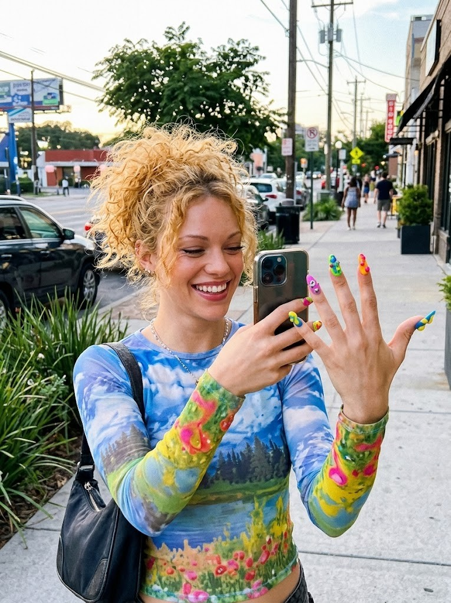
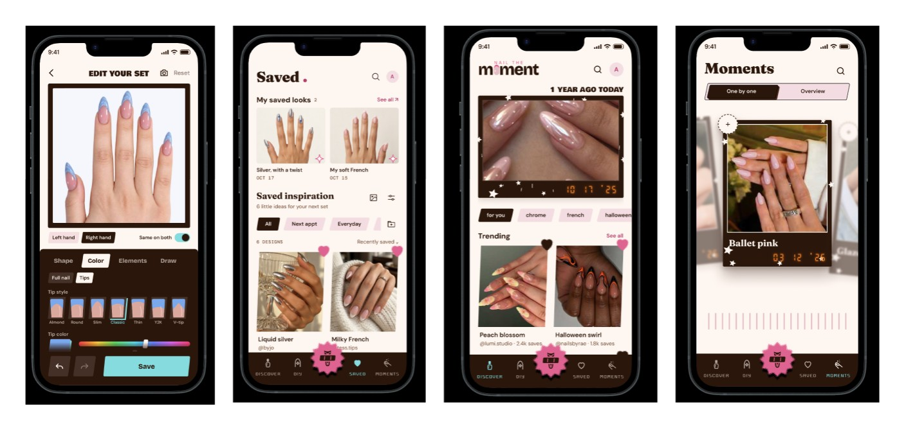
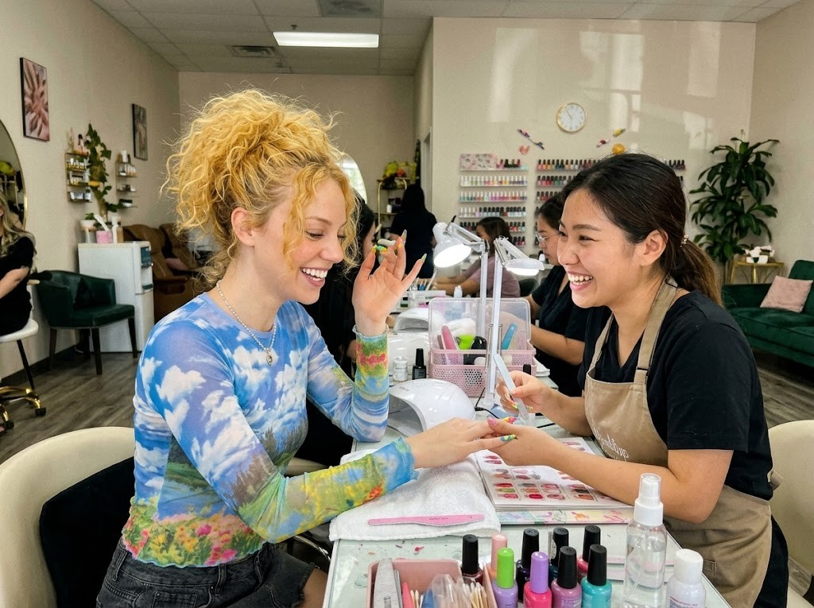
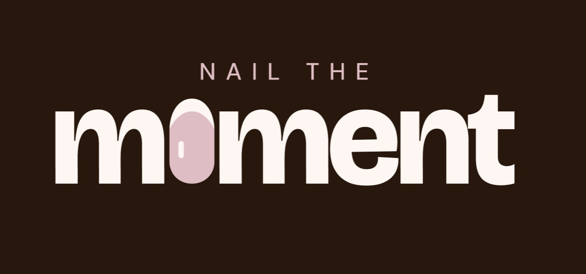

“I like this color,
but a different shape.”
A reference photo is a starting point. It rarely contains every choice she wants to make.
Nail the Moment
Your manicure history becomes a starting point
for your next appointment.


Revisit a past set, explore a change, and bring a more specific idea to the salon.
Explore the working prototype01 / The moment we chose
She gets her nails done regularly and wants something different. A color she loves, a shape she wants to try, a detail from her last set. The pieces are there. Explaining how they fit together is harder.

A reference photo is a starting point. It rarely contains every choice she wants to make.
Her own photos hold useful references, mixed in with everything else in her camera roll.
02 / The first design decision
Early explorations aimed to make the product feel complete. More features and visual directions made it harder to explain when someone would use it. Preparing for an appointment gave each step a purpose.

The question for each feature
Does this help her find a starting point,
explore a change, or communicate a choice?
Moments brings back something she has worn. Studio develops that preference into a reference for what comes next. Saved keeps her try-ons and inspiration close at hand.
The community is a browsing prototype. Accounts and publishing stay outside this iteration so the core appointment journey can be evaluated first.
03 / Designing the experience
A personal memory, a stable space to experiment, and a preview on her own hand work together around the same design.
A season, an occasion, or a color can be easier to recall than an exact date. The timeline lets her move through her own manicure photos. Search offers a more direct route when she remembers a specific clue.
Details stay lightweight. Saving a memory should not become a documentation task.
Explore Moments ↗The 3D hand gives her a stable space to compare colors, shapes, lengths, and details without keeping her real hand in front of a camera.
Direct manipulation makes those choices visible. She can rotate the model, change its pose, or edit a single nail. Editing hides the pose control so the tool panel stays clear.
Try Studio ↗AR answers a more personal question: how does this direction look on my own hand? One hand is in the camera, while the other holds the phone.
That constraint puts the essential adjustments within thumb reach and keeps the preview visible. 3D holds the broader editing task. AR focuses on a smaller set of adjustments and capture.
Try on your phone ↗04 / Bringing the journey together
She revisits a past set, carries its palette into Studio, explores a change, then previews the direction on her hand. The aim is to develop one idea through the journey.
A real photo gives the new design a personal starting point.
The 3D model makes colors and shapes easier to compare.
AR adds the context of her own hand.
A saved reference makes the direction easier to discuss.
05 / Defining success
She brings her preferences. The artist brings their expertise. The reference starts a conversation about what to keep, what to change, and what can be made.
“Keep this color.”
“Try a shorter shape.”
“Can we recreate this detail?”

06 / Try the prototype
Explore the phone prototype here, open the desktop simulator, or use the phone version on your own device.
Ready when you are.
Launch a screen to explore. Camera access is requested only when you choose live try-on.
Sample memories illustrate the diary. Your photos and edits stay in this browser. Photo imports extract a palette; automatic 3D reconstruction is simulated. Community browsing uses examples.

The presentation
The presentation follows the same story, with the project’s scenario images, animated feature demonstrations, and the complete speaker script.
Open presentation ↗07 / What we need to learn
The next evaluation needs to show whether each view helps her make a different choice, and whether the reference improves the conversation at the salon.
Can she carry a preference from a past photo into a new design without losing what she liked?
Does switching between 3D and AR add useful context, or interrupt the task?
Can she tell the artist what to keep, what to change, and what still needs confirmation?
These are questions for participant evaluation. The prototype does not establish better salon outcomes or production accuracy.
Nail the Moment